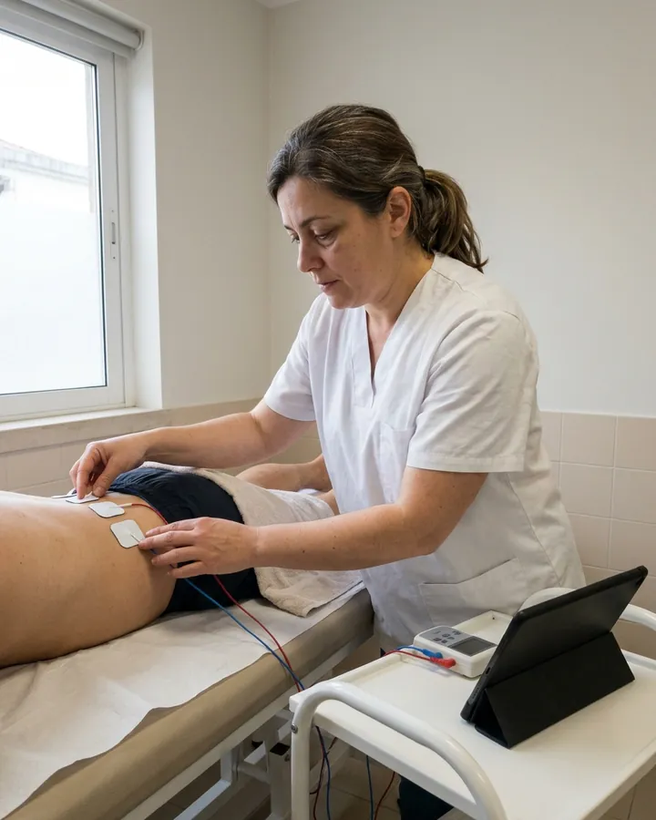
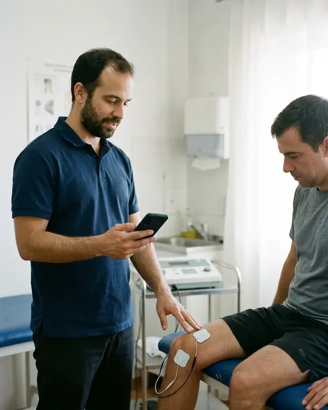
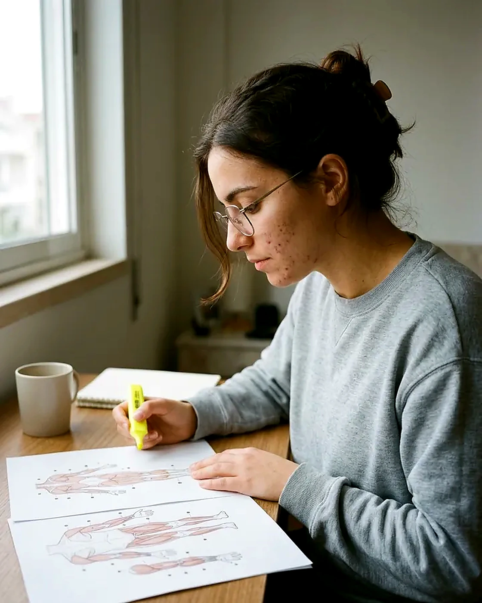

O utente já está na marquesa.
Tens quatro minutos até ligar o aparelho e surge a dúvida sobre onde fechar o segundo canal.
Procurar num livro de texto ou em fotos soltas do telemóvel atrasa a sessão e quebra a confiança.
Aqui abres a região no ecrã, confirmas os canais por cor e aplicas em segundos.

Páginas reais do Atlas
Oito páginas reais exportadas diretamente da edição de 397 páginas. Desliza para ver por dentro e toca em qualquer página para ampliar no ecrã inteiro.

Sempre pronto no tablet, no telemóvel ou impresso
Cada mapa tem o desenho à esquerda e a tabela prática à direita. Na página seguinte tens o passo a passo, o que o utente deve sentir e os sinais para parar a sessão.
- Canais CH1 a CH4 separados por cor e números 1A/1B, 2A/2B
- Zoom limpo no telemóvel para confirmar frequência (Hz) e pulso (µs)
- Formato horizontal A4 pronto a imprimir para o gabinete ou estudo
Manual de 800 páginas vs. Atlas visual
Os livros académicos continuam úteis para estudar a teoria. Na prática clínica, precisas de velocidade e de um guia estruturado.
Manual teórico de 800 páginas
- Blocos longos de texto corrido difíceis de consultar com o utente à espera.
- Muitas vezes descreve a corrente sem desenhar o par CH1/CH2 sobre a região.
- Pesado para transportar entre gabinetes, estágios e visitas ao domicílio.
- Custa entre 60 € e 110 € por volume e raramente traz fichas de registo.
Atlas visual ElectroMapas
- 70 mapas visuais organizados por região e condição, prontos em dois toques.
- Cada lâmina traz canais por cor, parâmetros do estudo e fonte PubMed/DOI.
- 397 páginas leves no telemóvel ou tablet, ou imprimíveis por secção no gabinete.
- Pagamento único de 11,87 € (IVA incluído), com 15 dias de garantia na Hotmart.
O que encontras nas 397 páginas
Contagem exata retirada do índice oficial da Edição Inverno. Cada secção resolve uma parte concreta do trabalho clínico.
70 Mapas por Região + Fichas Práticas
140 páginasLombar, abdómen e pelve (9 mapas), cervical e membro superior (9), anca e membro inferior (10), pós-operatório e pelve (10), neurológico e face (6) e 26 mapas complementares com ficha de 9 passos e tabela de registo.
Páginas 13–152Anatomia, Palpação e Pontos Motores
59 páginasMarcos anatómicos palpáveis, variabilidade entre pessoas, mapas de probabilidade e localização dos músculos-alvo para posicionar os elétrodos sem tentativas à sorte.
Páginas 256–314Guias Clínicos por Condição
47 páginasO que as diretrizes clínicas publicadas dizem (como NICE NG59, NG193, NG226 e NG123), o papel da eletroterapia face ao exercício e à educação, sinais de alerta e medidas de resultado.
Páginas 167–213Correntes, Parâmetros e Técnica
42 páginasFisiologia, dosagem, formas de onda (TENS, interferencial, NMES, FES e corrente russa), tipos de elétrodos e cartões de consulta rápida para ajustar o aparelho.
Páginas 214–255Inverno, Frio e Dor + Guia Ampliado
39 páginasO que mostra a meta-análise sobre clima e dor, efeitos do frio no músculo e no nervo, calor vs. gelo, pele seca e aderência dos elétrodos, idosos, prevenção de quedas e educação do utente.
Páginas 153–166 e 315–339Segurança, Avaliação e Documentação
39 páginasQuadro de contraindicações e precauções, reações cutâneas, consentimento informado, escalas validadas e formulários prontos para imprimir.
Páginas 340–378Abertura, Tabela-Resumo e Checklist
12 páginasGuia de leitura, metodologia e limitações da edição, índice geral, tabela-resumo de parâmetros dos 70 mapas, checklist pré-sessão e glossário de correntes.
Páginas 1–12Índice por Condição e Bibliografia
19 páginasÍndice rápido por condição clínica, registo documental de verificação dos mapas, notas da versão e bibliografia completa com 313 referências científicas verificadas.
Páginas 379–397Cada mapa cita o estudo publicado
Outros guias vendem desenhos soltos sem uma única referência. Aqui, cada um dos 70 mapas remete para o estudo original publicado (PMID e DOI no rodapé) e diz abertamente quando o artigo omitiu um valor.
- Rastreabilidade PubMed: autor, ano, revista, identificador PMID e hiperligação direta para o artigo em todos os mapas.
- Transparência na nota amarela: o que foi interpretado a partir do artigo (lado, distância ou convenção de canais) vem assinalado sem rodeios.
- Sem valores inventados: se um ensaio não publicou a largura de pulso ou a duração, o atlas mostra "não reportado" em vez de preencher à força.

Para quem foi feito este Atlas
Material de consulta direta para quem precisa de clareza visual no dia a dia da fisioterapia.
Fisioterapeutas em clínica ou domicílio
Para confirmar colocação, canais, contraindicações locais e parâmetros publicados em menos de dez segundos entre utentes.
Estudantes de Fisioterapia
Para ligar os pontos motores, os marcos anatómicos e as indicações clínicas à frente dos exames práticos e dos estágios.
Recém-licenciados em início de carreira
Para trabalhar ao lado da marquesa com um padrão visual consistente e 313 referências bibliográficas à mão.
Quem aplica TENS, interferencial, NMES, FES e corrente russa
Abrange as cinco modalidades mais usadas na prática clínica, com fichas imprimíveis para registo de sessão.
Nota profissional: os parâmetros indicados refletem o estudo citado em cada página. O ajuste final ao utente e ao aparelho é sempre responsabilidade do profissional habilitado.

Escolhe a tua edição
Pagamento único com IVA incluído. Acesso imediato enviado para o teu e-mail pela Hotmart.
Atlas Essencial (Básico)
Edição reduzida com os mapas base e fichas correspondentes.
- 112 páginas com 44 mapas das 5 secções principais
- Tabela-resumo de parâmetros e checklist de segurança
- Guia digital imprimível (telemóvel, tablet e PC)
- 26 mapas complementares (total 70 mapas)
- Capítulo Inverno, frio e dor + guia ampliado (39 p.)
- Guias clínicos por condição (47 p.)
- Correntes, parâmetros e técnica (42 p.)
- Anatomia, palpação e pontos motores (59 p.)
- Segurança, avaliação e 313 referências completas
Atlas Completo · Edição Inverno
A coleção integral de 397 páginas com todos os capítulos clínicos.
- 397 páginas completas com índice clínico e tabela-resumo
- 70 mapas visuais + 70 fichas práticas imprimíveis
- Fonte do estudo (PMID/DOI) em cada um dos 70 mapas
- Capítulo Inverno + Guia Ampliado (39 p.): frio, dor, pele seca
- Guias clínicos por condição (47 p.): diretrizes e red flags
- Correntes, parâmetros e técnica (42 p.): ondas e dosagem
- Anatomia e pontos motores (59 p.): palpação e músculos-alvo
- Segurança e documentação (39 p.) + 313 referências
Por mais 4 €, levas quase 4× o conteúdo (397 páginas em vez de 112).
Garantia incondicional de 15 dias
Tens 15 dias após a compra para abrir o Atlas, consultar os mapas no telemóvel ou no computador e conferir as referências. Se não servir para a tua prática ou estudo, pedes o reembolso direto na plataforma Hotmart sem perguntas.
Perguntas frequentes
Como recebo o Atlas depois de pagar?
Funciona bem no telemóvel?
Posso imprimir os mapas e as fichas?
Serve para estudantes de Fisioterapia?
Posso pagar com MB WAY ou Multibanco?
70 mapas · 397 páginas · 313 referências
Abre a região ao lado da marquesa e confirma o posicionamento, os canais e o estudo de origem antes de ligar o aparelho.